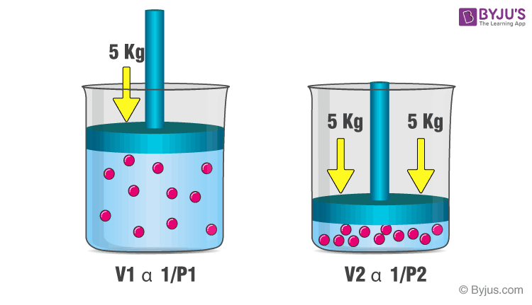

Boyle's Law
Introduction
Boyle's Law, a fundamental principle in physics and chemistry, reveals the intricate relationship between gas pressure and volume under constant temperature. Simply put, it states that when gas volume expands, pressure decreases, and when the volume contracts, pressure increases. This delicate equilibrium is expressed as P
1
V1
= P2
V2
, where P1
and V1
represent the initial pressure and volume, while P2
and V2
signify the final pressure and volume.

Transitioning to the world of a CO2 dragster, a crucial moment occurs when a CO2 cartridge is pierced, releasing pressurized carbon dioxide into the dragster's limited space. Boyle's Law, a masterful concept in gas dynamics, predicts that under constant temperature, a decrease in gas volume leads to increased pressure, and vice versa. As CO2 escapes into the dragster's confines, the volume reduction results in a noticeable spike in internal pressure—a phenomenon resembling an intricate dance orchestrated by molecular entities.
The immediate pressure surge gives rise to a force propelling the dragster forward. The expelled gas, driven backward by heightened internal pressure, acts as a catalyst for a reactive force, adhering steadfastly to Newton's Third Law of Motion. This propulsive force, guided by the forceful expulsion of high-pressure gas, acts as the driving force propelling the dragster into uncharted territories of velocity and acceleration.
It's essential for observers to recognize that while Boyle's Law illuminates the genesis of initial force and pressure, the story of the CO2 dragster unfolds against a backdrop where design intricacies, wheel mechanics, surface frictional coefficients, and the ethereal principles of aerodynamics converge in a symphony of factors. Together, these elements shape the trajectory, speed, and distance a CO2 dragster skillfully covers.